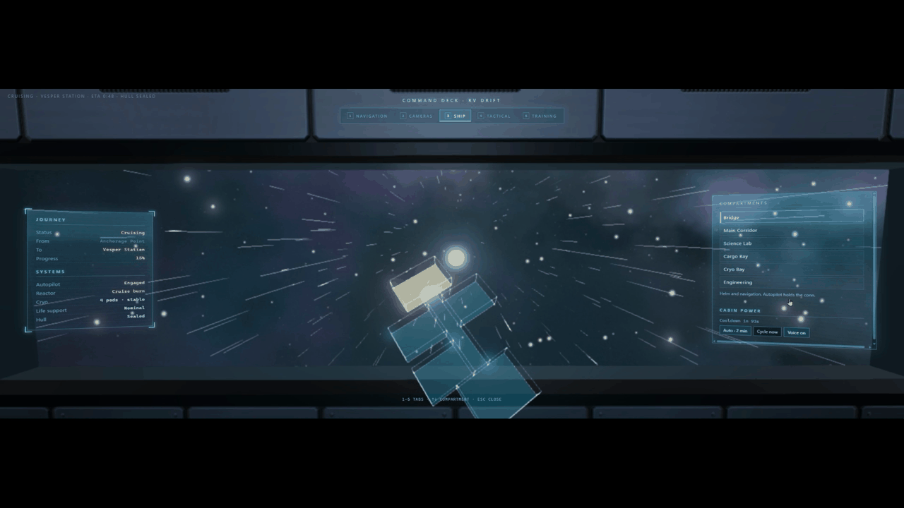
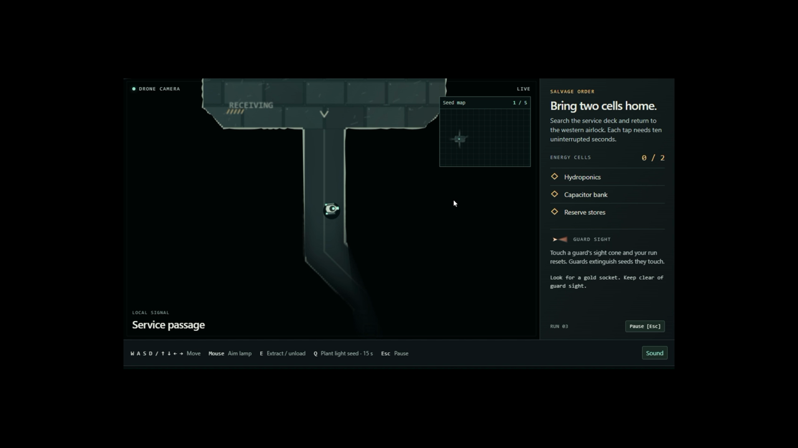
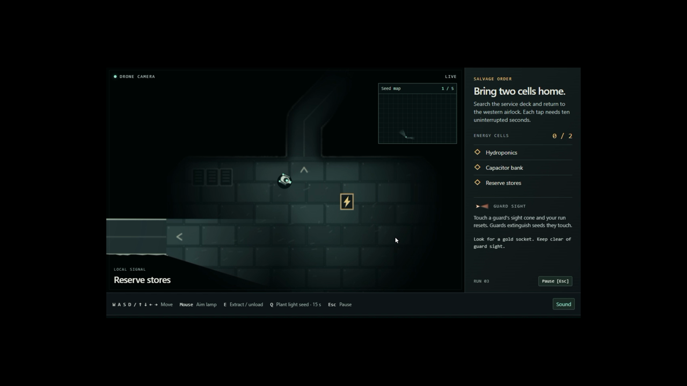

Build in Public, Day 5: Warp Drive, and a Stealth Mission I Didn’t Think I Could Build
Here’s a quick update on DRIFT, my quiet space game. You’re a small maintenance drone looking after a research ship while the crew sleeps in cryo. On Day 4 the ship got a dogfight you can fly. This time it learned to warp.
Watch the demo
The ship can now warp
Set a course at the command deck and the ship’s voice comes over the cabin speakers:
“Preparing for warp drive.”
Then streaks of starlight pour past every window. The trip takes about a minute, and you can float around the ship while you travel. It ends at a new destination: Vesper Station, an abandoned relay with a broken habitat ring and a lone distress beacon.

Vesper Station has a blackout
The station is dark. Your drone’s lamp is the only light, and patrol drones sweep the corridors with sight cones.
- The goal: pull two energy cells from their sockets. Each one takes ten seconds without interruption.
- The risk: if a guard spots you, it’s RED ALERT and you’re back at the airlock.
- The tool: to see where you’re going, you drop small light seeds that glow for 15 seconds, unless a guard flies over one and snuffs it out.


The honest part
I didn’t learn anything new building this. No new language, no new framework.
What changed was what I thought was possible. A stealth mission with light that stops at walls, guards whose vision gets cut off by bulkheads, and its own synth soundtrack felt way past what I could do. So I described what I wanted, playtested it, said what felt wrong, and kept going.
The skill wasn’t coding. It was refusing to accept “that’s probably too much for AI” before I’d actually tried.
Status
The stealth mission is a standalone prototype for now. The next step is bringing it into the 3D ship, so you can warp to Vesper and actually dock.
Over to you
What have you assumed AI couldn’t do for you, without testing it?
DRIFT is heading towards open source. If you’d like to follow along or get involved, DM me on LinkedIn.